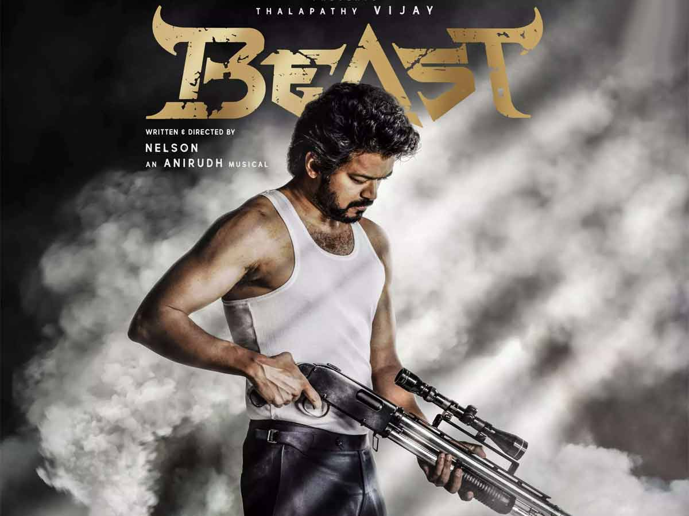
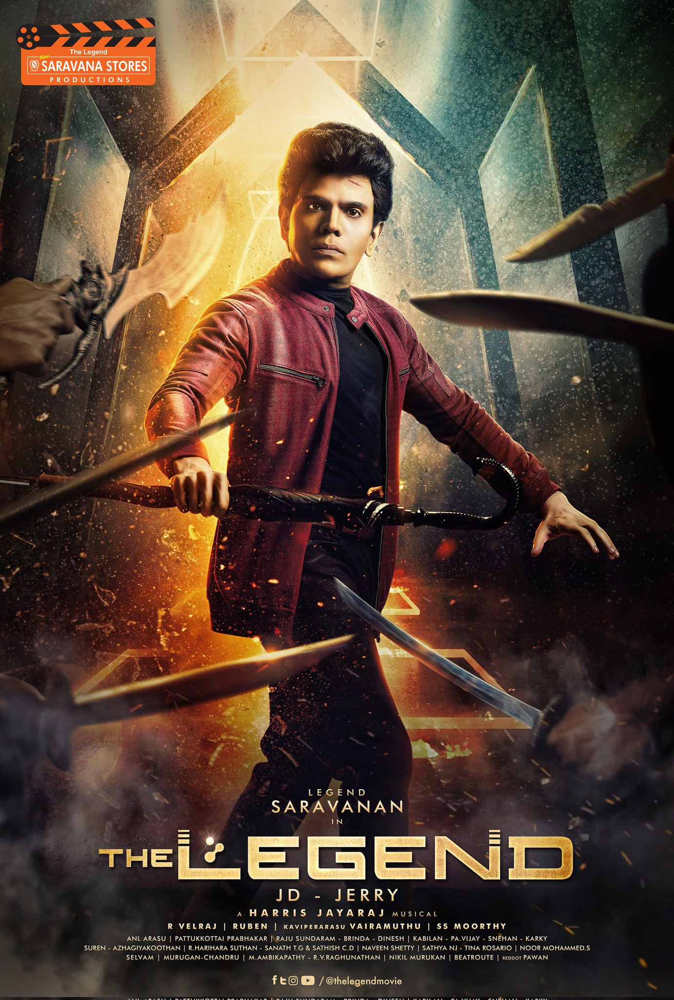
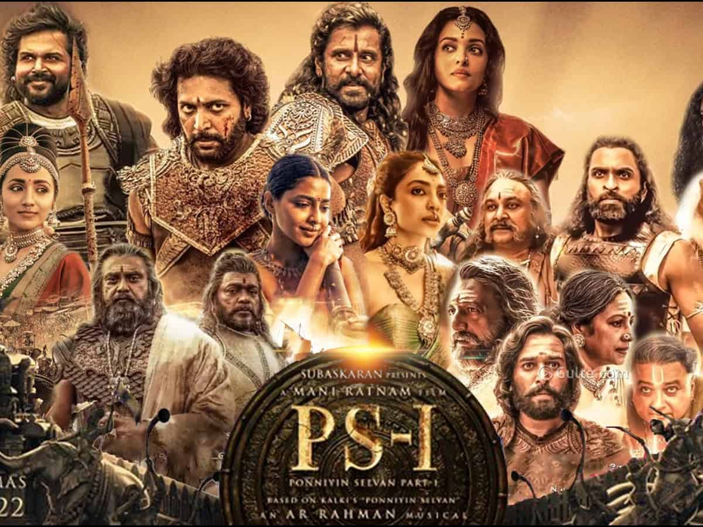
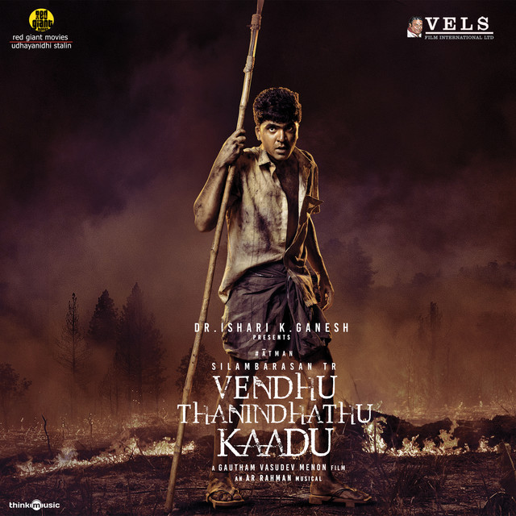

Top 7 movies of the year - 2022
1. Beast
Beast is a 2022 Indian Tamil-language action film written and directed by Nelson. The film stars Vijay, Pooja Hegde and Selvaraghavan. It revolves around an ex-RAW agent's crusade to rescue people held hostage in a shopping mall by terrorists.
2. KGF Chapter 2
K.G.F: Chapter 2 is a 2022 Indian Kannada-language period action film written and directed by Prashanth Neel, and produced by Vijay Kiragandur under the banner Hombale Films. The second installment in a two-part series, it serves as a sequel to the 2018 film K.G.F:Chapter 1. The film stars Yash, Sanjay Dutt, Raveena Tandon, Srinidhi Shetty and Prakash Raj. It follows the assassin Rocky who after establishing himself as the kingpin of the Kolar Gold Fields, must retain his supremacy over adversaries and government officials, while also coming to terms with his past.

3. Vikram
Vikram is a 2022 Indian Tamil-language action thriller film written and directed by Lokesh Kanagaraj and produced by Raaj Kamal Films International. The film stars Kamal Haasan,Fahadh Faasil and Vijay Sethupathi. Kalidas Jayaram, Narain and Chemban Vinod Jose play supporting roles while Suriya makes a cameo appearance. The film's soundtrack and score are composed by Anirudh Ravichander, with cinematography handled by Girish Gangadharan and editing done by Philomin Raj. The film serves as the second installment in the Lokesh Cinematic Universe (LCU). The plot follows a black-ops squad led by Agent Vikram, in which he aims to bring down a drug syndicate group called Vetti Vagaiyara, led by Sandhanam, who wants the missing drugs to be delivered to his boss Rolex.

4. Legend
The Legend is a 2022 Indian Tamil-language science-fiction action film written and directed by J.D.Jerry. The film stars Saravanan Arul (in his film debut), Geethika Tiwary (in her film debut), Urvashi Rautela (in her Tamil film debut) with Vivek (in his final appearance before death), Suman and Nassar. The film's music was composed by Harris Jayaraj, while cinematography and editing were handled by R. Velraj and Ruben, respectively. The plot revolves around Dr. Saravanan, a scientist who focuses on using his education and expertise to help his people and the nation.
5. Ponniyin Selvan: 1
Ponniyin Selvan: 1 (transl.The Son of Ponni) is a 2022 Indian Tamil-language epic historical action drama film directed by Mani Ratnam, who co-wrote it with Elango Kumaravel and B. Jeyamohan. Produced by Ratnam and Subaskaran Allirajah under Madras Talkies and Lyca Productions, it is the first of two cinematic parts based on Kalki Krishnamurthy's 1955 novel, Ponniyin Selvan. The film stars an ensemble cast including Vikram, Aishwarya Rai Bachchan, Jayam Ravi, Karthi, Trisha, Jayaram, Aishwarya Lekshmi, Sobhita Dhulipala, Prabhu, R. Sarathkumar, Vikram Prabhu, Prakash Raj, Rahman, R. Parthiban and Lal. The music was composed by A. R. Rahman, with cinematography by Ravi Varman, editing by A. Sreekar Prasad, and production design by Thota Tharani. Ponniyin Selvan: I dramatizes the early life of Chola prince Arulmozhi Varman, who would become the renowned emperor Rajaraja I (947-1014).
6. Vendhu Thanindhathu Kaadu
Vendhu Thanindhathu Kaadu Part I: The Kindling, (transl.The Scorched Forest Part I: The Kindling) is a 2022 Indian Tamil-language neo-noir gangster film directed by Gautham Vasudev Menon, written by B. Jeyamohan and produced by Ishari K. Ganesh. The film stars Silambarasan and Siddhi Idnani, with Raadhika Sarathkumar, Neeraj Madhav and Siddique in supporting roles, the film has music composed by A. R. Rahman.
7. Love Today
Love Today is a 2022 Indian Tamil-language romantic comedy-drama film written and directed by Pradeep Ranganathan of Comali fame, and produced by Kalapathi S. Aghoram under the banner of AGS Entertainment. The film stars Pradeep Ranganathan himself (in his acting debut), Ivana and Raveena Ravi in lead roles. The film's music and score is composed by Yuvan Shankar Raja, with cinematography handled by Dinesh Purushothaman and editing done by Pradeep E. Ragav. It is an adaptation of Pradeep Ranganathan's own short film App(a) Lock.